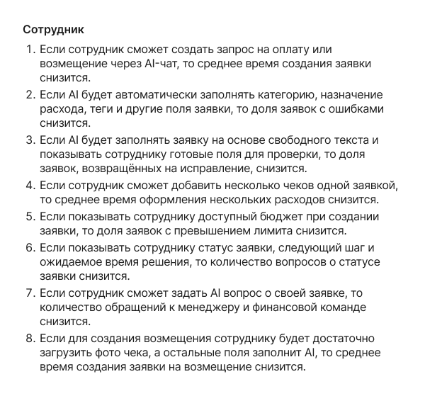
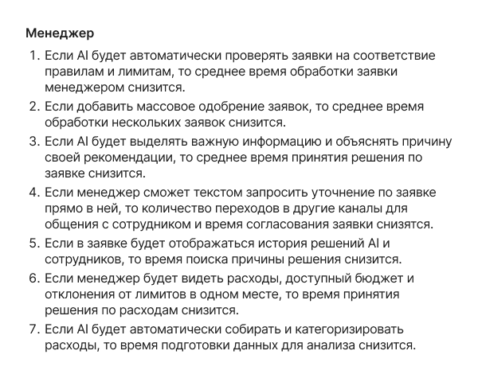
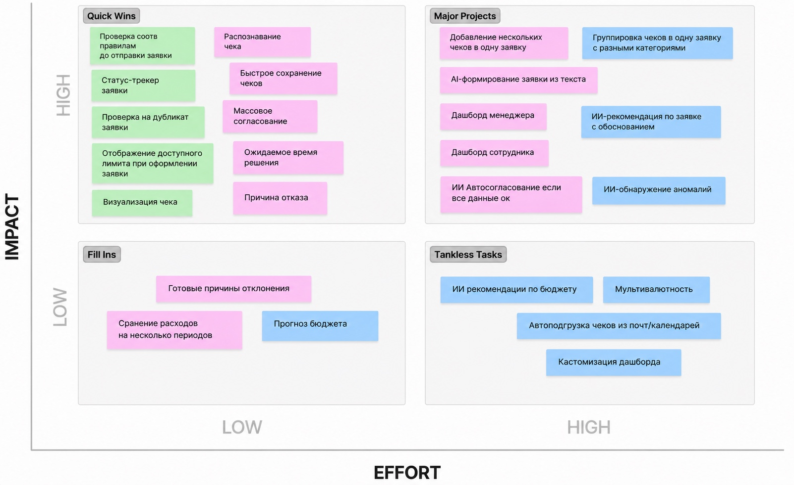

AI-платформа для управления расходами
Во многих компаниях процесс оформления и согласования корпоративных расходов не автоматизирован и не имеет единого регламента. Сотрудники оплачивают рабочие расходы, собирают чеки и обращаются за возмещением через менеджеров, секретарей или финансовый отдел.
Заявки, документы и согласования передаются по электронной почте, в мессенджерах и других каналах. Информация хранится разрозненно, а сам процесс часто зависит от внутренних договорённостей и ручной координации между участниками.
AI-платформа для управления расходами создаёт единое пространство для оформления, согласования и контроля корпоративных расходов. Сотрудники могут подавать заявки на возмещение, прикладывать документы и отслеживать статусы, а менеджеры и финансовая команда получают единый инструмент для проверки, согласования и контроля расходов.
Единой системы нет — и процесс расходов непрозрачен и сотрудникам, и менеджерам.
Для сотрудников
непонятно, как правильно оформить заявку и какие документы приложить;
нет единого места, где можно подать заявку и проверить её статус;
приходится самостоятельно уточнять ход согласования и передавать информацию разным участникам.
Для менеджеров и финансовой команды
заявки и подтверждающие документы поступают через разные каналы;
нет единого реестра расходов и заявок, по которому можно отслеживать их состояние;
сложно контролировать соблюдение корпоративных правил и лимитов;
обработка заявок требует ручной координации, проверки данных и дополнительных уточнений.
В итоге всё держится на конкретных людях и ручных действиях: заявки трудно отслеживать и контролировать, прозрачности не хватает ни на одном этапе.
Задача продукта
Создать единую платформу для оформления, согласования и контроля корпоративных расходов: один процесс для заявок, меньше рутины за счёт ИИ и прозрачный статус для каждого участника.
Сотрудник сам оформляет заявку и видит, что с ней происходит. Менеджеры и финансовая команда проверяют расходы и согласуют в одном месте, а не по почте и в чатах.
Исследование и формирование гипотез
На старте мне было важно понять, какие задачи пользователей остаются нерешёнными и какие возможности для продукта уже существуют на рынке. Поэтому я начала с бенчмарка конкурентов и сегментации аудитории: это помогло изучить существующие решения, выделить группы пользователей и сформировать первые гипотезы об их потребностях.
Чтобы проверить предположения и разобраться в реальном пользовательском опыте, я провела пять глубинных интервью. На основе ответов систематизировала инсайты, уточнила потребности и сценарии использования. Затем использовала JTBD и CJM, чтобы связать задачи пользователей с их контекстом, выявить проблемные точки и определить возможности для улучшения пользовательского пути.
В завершение я приоритизировала функциональные возможности с учётом выявленных потребностей и сформулировала финальные гипотезы. Они стали основой для проектирования решения: от выбора ключевых сценариев до определения функций, которые должны приносить пользователям наибольшую ценность.
Бенчмарк: как решают другие
Распознавание чеков, извлечение позиций, действия внутри разрешений. AI действует в процессе, а не только генерирует текст.
Автозаполнение, подсказки по документам и политике. Нарушение объясняется вместе со следующим шагом.
Отчёты на естественном языке, сочетание AI и структурных проверок для сложных процессов.
Запросы по расходам, бюджетам и аналитике; у метрик всегда есть период и определение.

Рис. 1 — Бенчмаркинг: как строят процесс расходов Expensify, Brex, SAP Concur и Ramp
Сегментация: кому и когда это больно
Финансы на бухгалтере или руководителе. Расходы регулярные, но объём пока позволяет контролировать вручную.
Появляется финансовая команда и бюджеты отделов. Растут человеко-часы на обработку, риск ошибок и пропущенных нарушений.
Несколько ролей контроля, уровней согласования, юрлиц и стран. Сложно быстро понять, какие расходы требуют внимания.
Линейный сотрудник — не знает процесс и тратит время на уточнения, высокий процент возвратов. Сотрудник с регулярными расходами — повторяет одни и те же действия вручную.
Сегментация ролей и аудитории — на отдельной странице →
Первоначальные гипотезы
По результатам сегментации и бенчмарка сформулировала гипотезы для проверки:


Рис. 2–3 — гипотезы для проверки перед кастдевом
Кастдев: 5 глубинных интервью
Респондентов отбирала по критериям сегментации: за последние полгода оплачивали рабочие расходы своими деньгами и проходили возмещение. Среди них и те, кто подаёт заявки — разовые траты, командировки, — и те, кто их обрабатывает: менеджеры и финансовая команда. Компании — от малого бизнеса до энтерпрайза.

Рис. 4 — материалы кастдева: заметки интервью
Выводы после кастдева
Изначальная гипотеза о том, что сотрудникам сложно и долго заполнять заявки, не подтвердилась. В некоторых компаниях сотрудник вообще почти не заполняет заявку сам, эту работу берёт на себя менеджер, HR или бухгалтер.
Основная проблема оказалась не просто в заполнении формы, больше в подготовке: нужно собрать чеки и документы, разобраться в правилах и лимитах, понять категории расходов, перенести данные и проверить, что всё сходится.
Для сотрудника может быть лучше не просто «быстро заполнить форму», а иметь одно место, куда можно сразу сохранять чеки и документы во время командировки и потом собрать из них одну заявку.
Я вижу потенциал AI не только в заполнении полей сотрудником, но и в автоматизации работы менеджера: распознавать документы, извлекать данные, определять категорию расхода, проверять лимиты и готовить заявку к согласованию.
Важная проблема, которая повторилась в интервью, это непрозрачность процесса после отправки. Сотруднику приходится спрашивать HR или руководителя, что происходит с заявкой и когда будут деньги. Здесь сервис может заменить часть постоянных уточнений понятным статусом.
Гипотезы после кастдева:
Удобно собирать расходы постепенно и отправлять одной заявкой — особенно в командировках.
Важно понимать, что происходит после отправки и на каком этапе обработка.
Важно заранее понимать, что компенсируют и укладывается ли расход в лимит.
Частично и не подтвердились:
Электронный чек вместо бумаги — нужен там, где чек распечатывают и несут менеджеру.
Заполнение формы — не главная боль сотрудника: заявку часто заполняет менеджер, HR или бухгалтер.
Материалы кастдева — на странице с выводами интервью →
Приоритизация фич
Собранные идеи разложила по матрице «эффект — сложность»: что закрывает главные боли обеих сторон и не требует переделки процесса — в первую версию, остальное — в бэклог следующих итераций.

Рис. 5 — приоритизация фич: матрица «эффект — сложность»
Вывод по исследованию
Если сложить бенчмарк, JTBD, CJM и кастдев, картина такая: AI у конкурентов встроен в процесс — распознаёт чеки и объясняет нарушения, а не просто отвечает на вопросы. Ручная работа скапливается до заявки — собрать чеки и разобраться в лимитах, — и после неё — проверить данные и согласовать. Сотруднику нужно одно место для чеков, понятный статус и лимиты, видные до траты. Приоритизация сложила это в ядро первой версии.
Основные задачи при проектировании:
Черновики чеков — сотруднику важно сохранять чеки и расходы по мере их появления, чтобы не собирать всё заново в конце командировки и не бояться потерять документы.
Лимиты — важно заранее видеть доступный лимит и понимать, какая сумма будет компенсирована, чтобы не тратить время на расходы, которые потом не примут.
Статус заявки — важно в любой момент понимать, на каком этапе находится заявка и что произойдёт дальше, чтобы не приходилось отдельно спрашивать HR или руководителя.
Основная нагрузка — не в заполнении формы, а вокруг неё: собрать чеки, разобраться в правилах и лимитах, перенести данные, проверить суммы — и всё это ещё тяжелее на стороне тех, кто заявки обрабатывает. Фокус сместился с «заполнить форму быстрее» на «сократить ручную работу по всему пути расхода и сделать его прозрачным».
Полный документ «Финальные гипотезы после исследований» — на buildin.ai →
Автозаполнение — не молчаливое волшебство: распознанные поля подсвечены и редактируются, источник данных — прикреплённый чек. ИИ предлагает, сотрудник подтверждает.
Этапы, лимиты и роли везде различаются. Модель статусов спроектирована так, чтобы накладываться на внутренний регламент компании, а не ломать его.
Сотруднику важна его заявка и лимит, менеджеру — команда и бюджет, финансовой команде — реестр и контроль. Одни и те же данные, три уровня детализации.
Финансовый продукт не прощает ошибок: суммы считаются на лету, а «Отправить в работу» неактивна, пока не заполнены обязательные поля.
Подбор стиля и визуального оформления
Собрала несколько вариантов визуального направления и выбирала: оформление должно помогать работать с заявками и документами, а не перетягивать внимание на себя.
Структура и логика экранов до визуальной проработки
Проверила на вайфреймах структуру ключевых экранов и логику сценария — до того, как рисовать визуал.

Рис. 6 — вайфреймы: структура экранов и логика сценария
Что в итоге спроектировала
Экраны сотрудника
Главная с доступным лимитом и последними заявками, «Мои заявки» с фильтрами по статусам и форма с ИИ-распознаванием чеков: весь путь заявки — от черновика до выплаты.
Дашборд финансовой команды
Реестр расходов и заявок, контроль лимитов и нарушений, работа с исключениями — вместо ручной сверки каждой строки по почте и мессенджерам.
Дизайн-система с нуля
Токены, UI-kit на компонентах и Variables, страница Foundations и модель статусов с иконками и цветами. Новые экраны собираются из готовых блоков.
Дальше — валидация
Тесты с пользователями и настройка этапов, лимитов и правил под регламенты конкретных компаний.
Чему меня научил этот кейс
Сначала — правильная проблема
Заполнение формы выглядело главной болью, а кастдев показал: боль вокруг формы — чеки, лимиты, статусы. Теперь всегда проверяю проблему, а не только решение: решений может быть много, ошибка в проблеме стоит дороже всех.
ИИ не чинит процесс
Автоматизация работает, только когда процесс понятен: сначала статусы, лимиты и правила — потом ИИ, который снимает рутину. Иначе получится быстрая форма внутри сломанного пути.

Synergy LMS + ЕЛК
Платформа обучения и единый личный кабинет студента: 40 000+ студентов и 1 000+ преподавателей, дизайн-система сократила разработку на 50%.
Консультант по учёбе
ИИ-помощник студента внутри LMS: отвечает на вопросы об учёбе, подсказывает следующие шаги и снимает нагрузку с кураторов.
Корпоративные порталы
Интранет Сбера, портал банка «Открытие» на 22 000+ сотрудников, платформа диагностики Kia и приложение для ИНК.